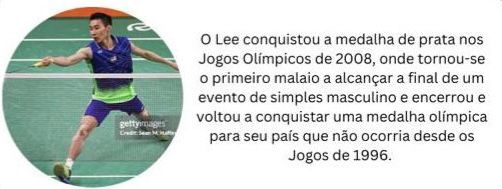
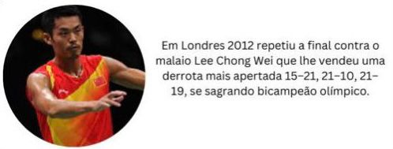
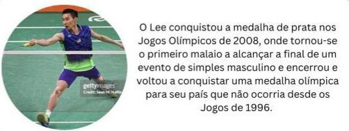
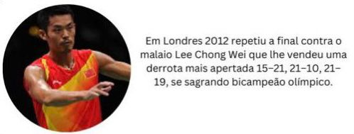

A História do Badminton
Origem
História do Badminton
O Crescimento do Esporte
Desde suas origens humildes, o Badminton cresceu para se tornar um esporte global. Ele foi oficialmente incluído como modalidade olímpica em 1992, e hoje é praticado em mais de 160 países.
Os países asiáticos, como China, Indonésia e Coreia do Sul, têm dominado o esporte, produzindo alguns dos maiores jogadores de todos os tempos, como Lin Dan e Lee Chong Wei.
Curiosidades
- A peteca pode atingir velocidades superiores a 550 km/h, mas a temperatura e a pressão atmosférica influenciam a sua velocidade.
- O badminton é um dos poucos esportes que permite a competição entre homens e mulheres, em categorias mistas. A peteca fica em jogo por 45% do tempo total de uma partida, enquanto no tênis a bola fica em jogo por 8% do tempo.
- Indonésia e a China são os países que mais venceram eventos da IBF, tendo conquistado juntos 70% de todos os eventos. A peteca de alta qualidade é feita com penas de ganso, mas em países como a Indonésia e a Malásia, muitas pessoas usam petecas feitas de penas de galinha.
- O golpe mais ofensivo e importante do badminton é o smash, que vence o ponto se for bem executado. A Federação Mundial de Badminton, que consolida a modalidade, tem a sua sede na Inglaterra e conta com mais de 130 países membros. A estreia do badminton nas Olimpíadas foi em Barcelona, em 1992, e desde então a modalidade não saiu mais do programa.
- Confederação Brasileira de Badminton foi fundada em 1993, em São Paulo, e foi importante para o aumento da prática do desporto no Brasil.
- O Badminton é o esporte de raquete mais rápido do mundo.
- O jogo exige tanto preparo físico quanto mental, com partidas que podem durar mais de uma hora.
 


